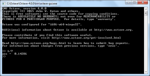
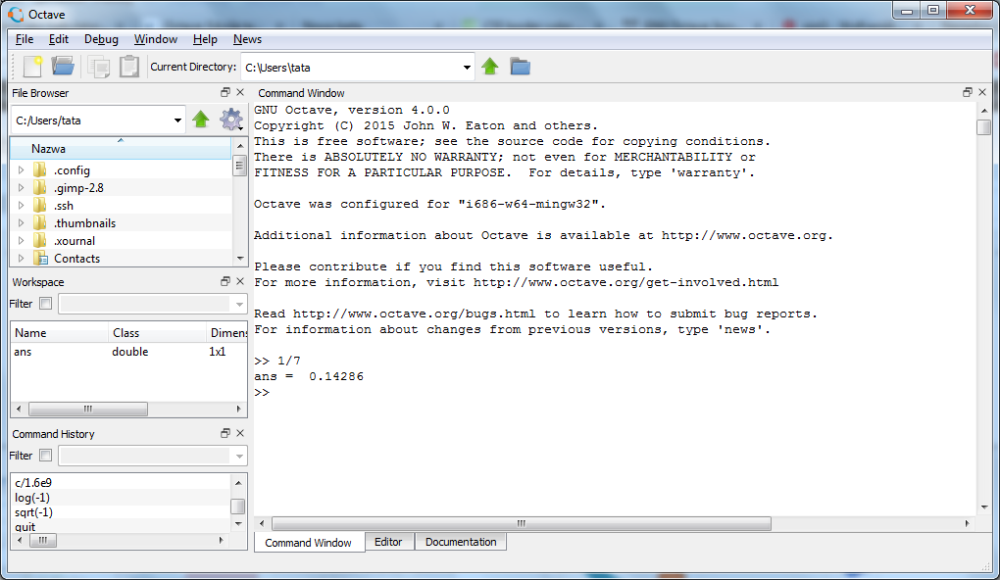

Obsługa Octave’a¶
Konsola i GUI¶
Octave może być używany zarówno z poziomu interfejsu graficznego, jak i z wiersza poleceń. W obu przypadkach podstawą pracy są te same polecenia tekstowe i ten sam język.
Dla użytkownika przyzwyczajonego do programów obsługiwanych głównie myszką praca w konsoli może początkowo wydawać się mniej wygodna. Jej podstawową zaletą, decydującą o przydatności programów konsolowych, jest jednak łatwość automatyzacji. Polecenia tekstowe można łatwo powtarzać, zapisywać w skryptach, uruchamiać wielokrotnie dla różnych danych, a także wywoływać z innych programów.
Dzięki temu to, co najpierw wykonujemy ręcznie w konsoli, może później stać się częścią większego procesu obliczeniowego. Konsola dobrze nadaje się więc do:
- powtarzalnych obliczeń,
- automatyzacji,
- szybkiego testowania pojedynczych poleceń,
- pracy na zdalnych komputerach,
- uruchamiania skryptów i procedur obliczeniowych.
Octave może pracować w dwóch podstawowych trybach: z linii komend, czyli jako CLI (command-line interface), oraz w wersji okienkowej, czyli GUI (graphical user interface). Interfejs graficzny korzysta z tego samego interpretera Octave i udostępnia dodatkowo m.in. edytor, przeglądarkę plików, podgląd zmiennych i historię poleceń.
W terminalu Octave można uruchomić poleceniem:
a interfejs graficzny, w instalacjach które go udostępniają, poleceniem:
W systemach GNU/Linux terminal można zwykle otworzyć skrótem Ctrl+Alt+T.

Przykład konsolowej wersji Octave.

Przykład Octave z interfejsem graficznym.
Historia poleceń¶
Klawisze ↑ i ↓ pozwalają przywoływać wcześniej wykonane polecenia. Jest to jeden z najwygodniejszych sposobów poprawiania i ponownego uruchamiania komend.
Mechanizm historii zwykle obejmuje również wcześniejsze sesje programu, dzięki czemu można wrócić do polecenia wykonanego wcześniej, poprawić je i uruchomić ponownie.
Polecenie:
wyświetla historię wykonanych instrukcji.
Jeżeli wynik jest wyświetlany przez pager, można spotkać sposób nawigacji znany z programu less:
f— następny ekran,b— poprzedni ekran,q— wyjście.
Tabulator i autouzupełnianie¶
Klawisz Tab uruchamia mechanizm automatycznego uzupełniania. Działa on nie tylko dla nazw funkcji, lecz również dla nazw zmiennych i plików.
Przykładowo po wpisaniu:
i naciśnięciu Tab Octave może uzupełnić nazwę funkcji roots.
Jeżeli początek nazwy nie jest jednoznaczny, pierwsze naciśnięcie Tab może nie wykonać pełnego uzupełnienia. Ponowne naciśnięcie wyświetla dostępne możliwości.
Autouzupełnianie jest szczególnie wygodne podczas pracy z plikami. Jeżeli w katalogu roboczym znajduje się np. plik:
to zamiast wpisywać całą nazwę można zacząć od kilku znaków i użyć Tab. Zmniejsza to liczbę literówek i ułatwia pracę z długimi nazwami plików.
Mechanizmu tego można używać także wewnątrz poleceń, np. przy wpisywaniu argumentu będącego nazwą pliku.
Przydatne skróty klawiaturowe¶
↑,↓— poprzednie i następne polecenia z historii,Ctrl+R— wyszukiwanie w historii poleceń,←,→— przesuwanie kursora,Ctrl+K— wycięcie tekstu od kursora do końca wiersza,Ctrl+Y— wklejenie tekstu z bufora,Ctrl+GlubEsc— wyjście z niektórych specjalnych trybów konsoli.
Warto szczególnie zapamiętać Ctrl+R: po jego naciśnięciu można zacząć wpisywać fragment dawnego polecenia zamiast wielokrotnie przeglądać historię klawiszem ↑.
Polecenia help i doc¶
Nie ma potrzeby zapamiętywania składni wszystkich funkcji Octave. Program ma rozbudowany system pomocy.
Polecenie:
wyświetla informacje o dostępnych poleceniach. Najczęściej podajemy jednak nazwę konkretnej funkcji:
To najszybszy sposób, aby sprawdzić składnię i znaczenie argumentów funkcji podczas pracy w konsoli.
Pełniejsza dokumentacja jest dostępna przez:
oraz analogicznie dla innych tematów i funkcji.
W zależności od sposobu uruchomienia Octave dokumentacja może zostać pokazana w oknie GUI albo w trybie tekstowym. W trybie tekstowym długie strony mogą korzystać z pagera. Wtedy przydatne są m.in. PageDown, PageUp, strzałki, Home, End, a do wyjścia zwykle służy q.
Internetowa wersja dokumentacji znajduje się na stronie docs.octave.org.
Pliki pomocnicze¶
Octave korzysta m.in. z plików:
.octave_hist— historia poleceń,.octaverc— instrukcje wykonywane podczas uruchamiania Octave.
Dokładna lokalizacja tych plików zależy od systemu operacyjnego i konfiguracji programu.
Katalog roboczy¶
Podczas pracy ze skryptami i plikami danych trzeba kontrolować katalog roboczy. Najważniejsze polecenia to:
pwd— wyświetla bieżący katalog,ls— wyświetla zawartość katalogu,cd— zmienia katalog roboczy.
Przykład:
Jeżeli skrypt programik.m znajduje się w katalogu roboczym, Octave może go uruchomić po wpisaniu samej nazwy:
W wersji graficznej analogiczną rolę pełni m.in. panel File Browser. Warto zawsze sprawdzić, czy wskazuje katalog, w którym znajdują się używane skrypty i dane.
Octave Online¶
Do ćwiczeń można wykorzystać również środowisko działające w przeglądarce:
Ćwiczenia¶
- Uruchom Octave i wykonaj kilka prostych poleceń.
- Za pomocą
↑i↓wróć do wcześniejszych poleceń i zmodyfikuj jedno z nich. - Użyj
Ctrl+R, aby odnaleźć wcześniejsze polecenie po fragmencie tekstu. - Użyj
Tab, aby uzupełnić nazwę funkcjirootslubplot. - Utwórz plik o długiej nazwie i sprawdź autouzupełnianie jego nazwy za pomocą
Tab. - Wyświetl pomoc dla poleceń
format,plotiroots. - Sprawdź bieżący katalog poleceniem
pwdi jego zawartość poleceniemls. - Utwórz katalog roboczy dla kursu i przejdź do niego za pomocą
cd.